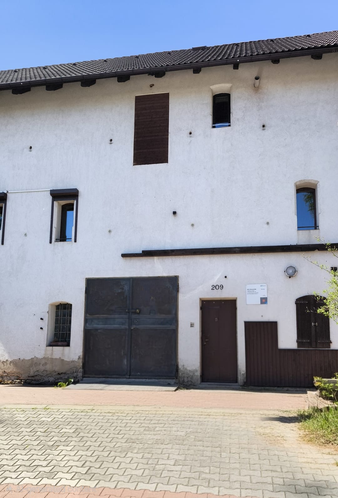
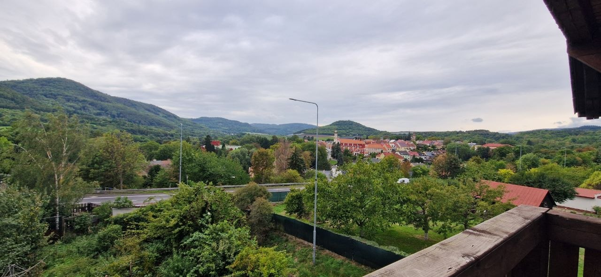
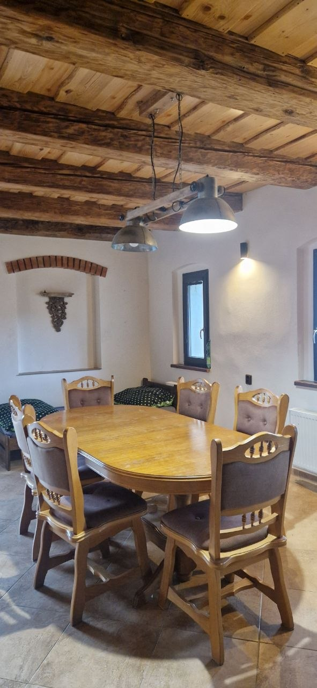
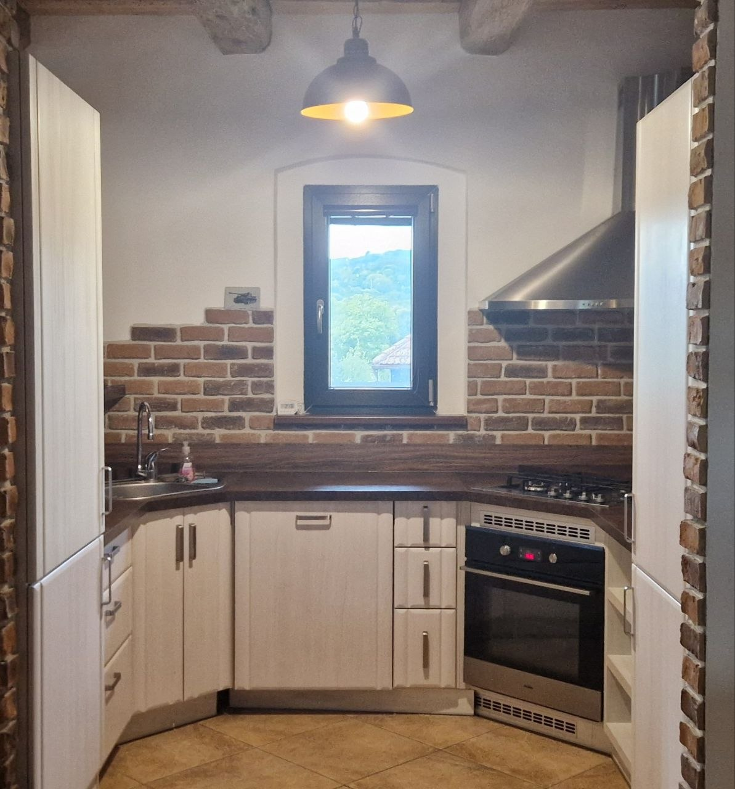
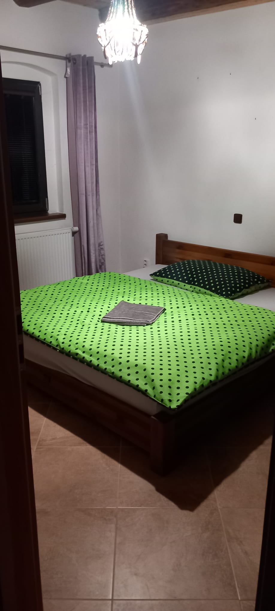
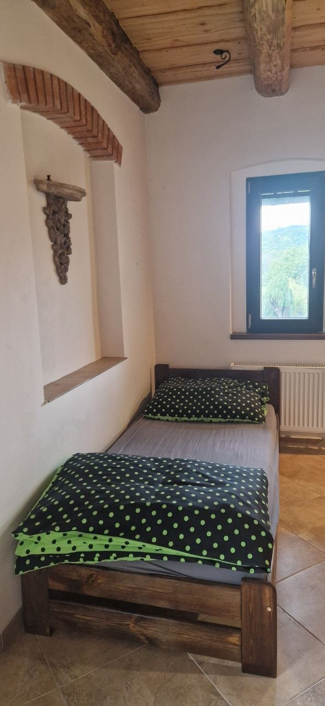
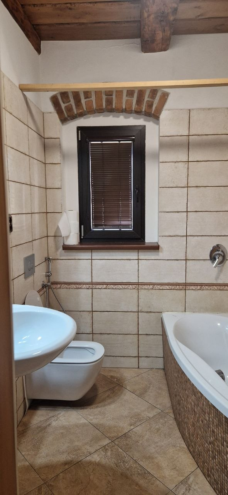
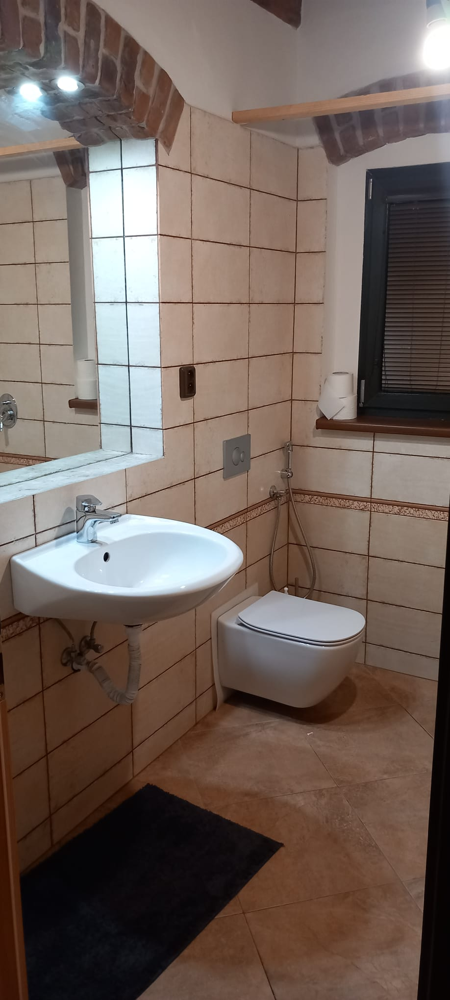

White walls, old beams
[Ivan's description of the property's character — the brick, the beams, what the space feels like to walk into.]
Placeholder — replace with Ivan's copy once received.
A quiet retreat
[Ivan's introductory line about the property — what makes it special, and for whom.]
Enquire now


[Ivan's description of the property's character — the brick, the beams, what the space feels like to walk into.]
We offer modern accommodation in a quiet building with flats across three storeys, making it an ideal choice for a group, for long-term stays, or for corporate travellers passing through.
On the first floor, a separate apartment for three people includes a kitchen and a private bathroom with a shower and a toilet.
The second floor and the attached attic hold three separate double rooms. The attic has its own private bathroom with a shower and a toilet. The second floor also has a spacious kitchen with a dining table, a television, and a private bathroom with a bathtub and a toilet, along with a utility room with a washing machine and dryer.
The attic and second floor can be adapted to suit individual requirements, for up to ten people.





